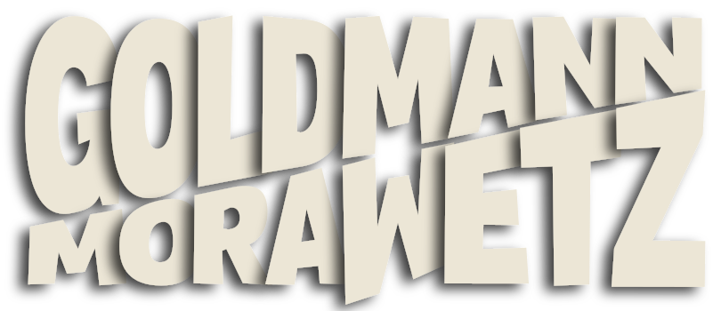
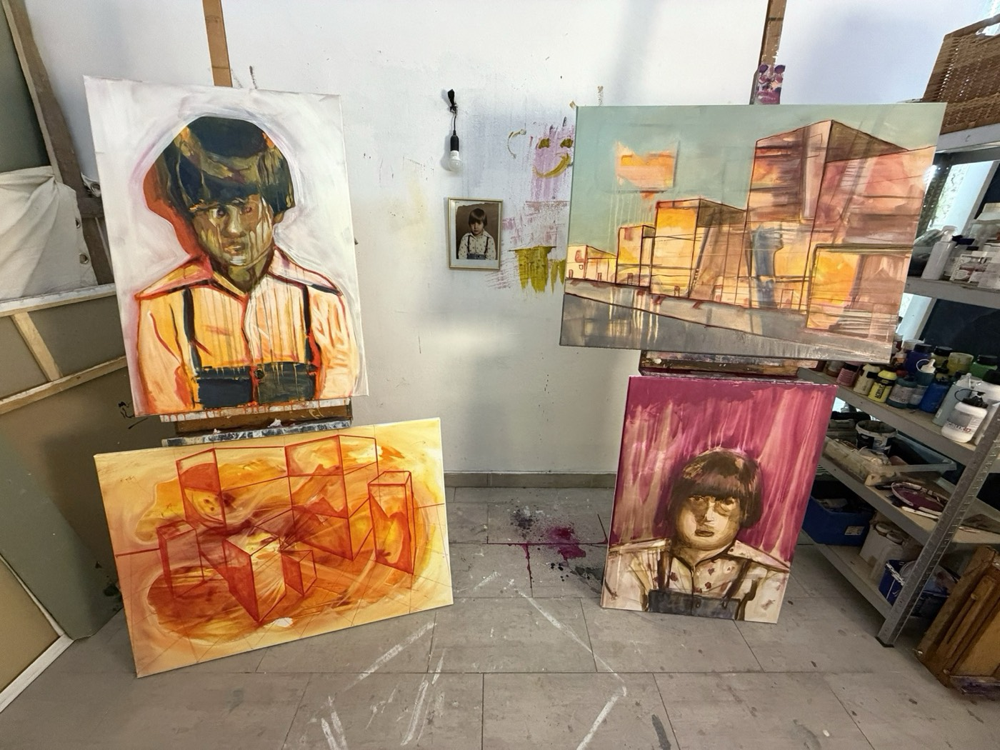
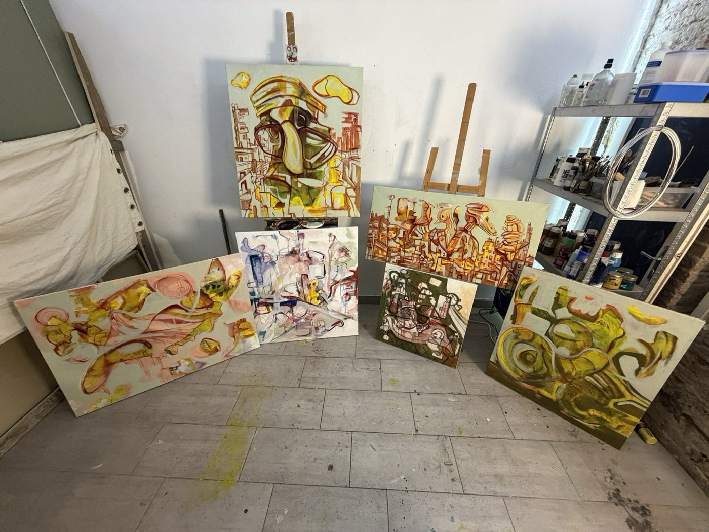
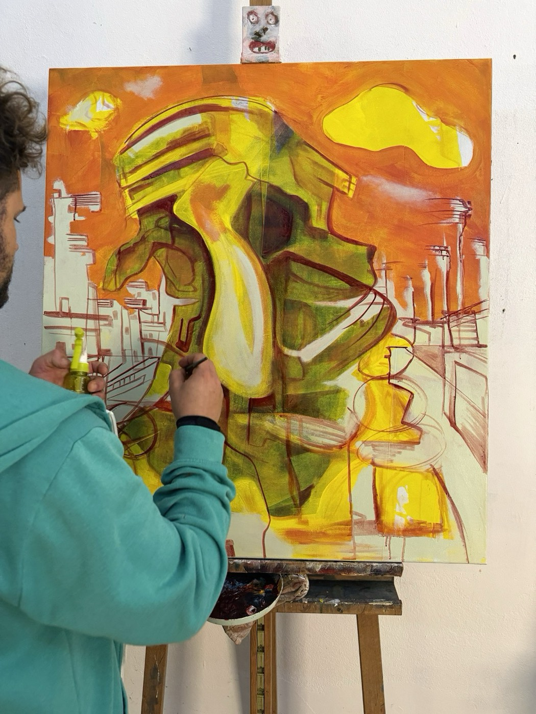
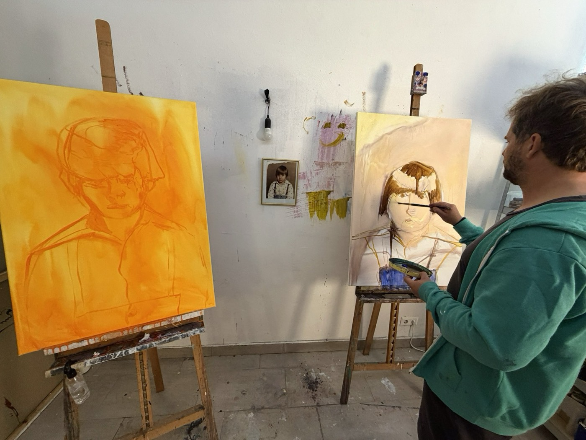
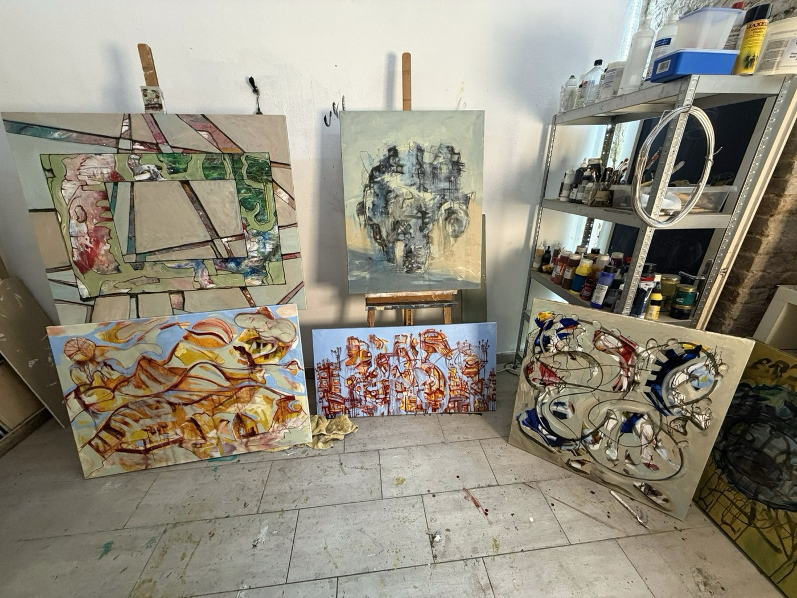
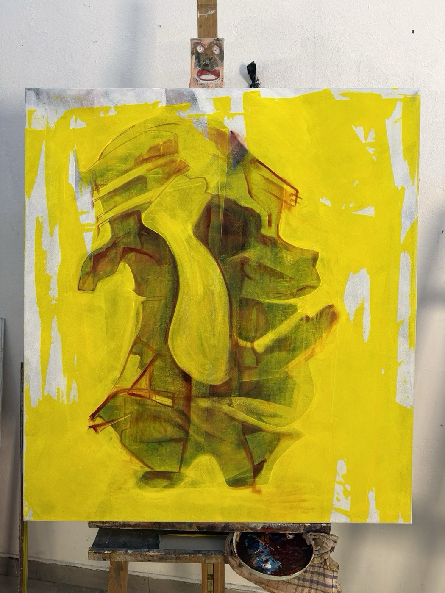
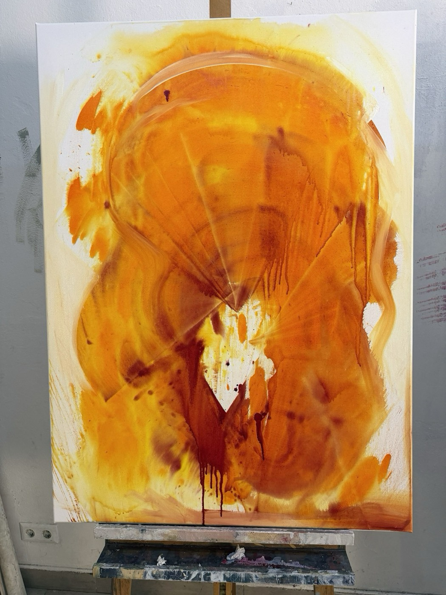
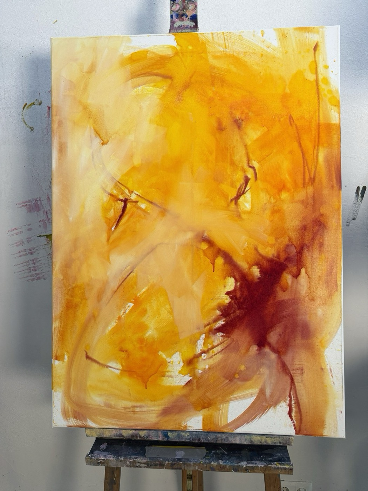

Zwei Maler, ein Bild. Meistens gleichzeitig.
Wir kennen uns ein halbes Leben. Zusammen malen wir seit 2020, heute in unserer Werkstatt im 6. Bezirk.

Zwei malen.Zwei malen an einem Bild, oft gleichzeitig, bis keiner mehr weiß, von wem welcher Strich ist.

Unter den meisten Bildern liegen zwanzig bis vierzig andere. So kommen sie dorthin.
In die WerkstattErst muss das Weiß weg. Ein Schwall Tinte, ein Batzen Acryl, dann geht’s los.
Meistens malen wir gleichzeitig am selben Bild. Manchmal abwechselnd, manchmal nebeneinander an verschiedenen.
Was der andere mühsam gemalt hat, bleibt meistens stehen. Meistens. Dazwischen sitzen wir und schauen, bis einer etwas sieht, das keiner geplant hat.
Fertig wird ein Bild nie. Irgendwann erklären wir es für fertig.




Zwei Maler, ein Bild. Meistens gleichzeitig.
Wir kennen uns ein halbes Leben. Zusammen malen wir seit 2020, heute in unserer Werkstatt im 6. Bezirk.
Bilder, gehängt wie an einer Wand
Unter einem fertigen Bild liegen oft zwanzig bis vierzig andere, mit Narben und Geschichten, die keiner sieht. Hier ein paar davon.
[Titel]

[Titel]


Zwei Maler, ein Bild. Meistens gleichzeitig.
Wir kennen uns ein halbes Leben. Gemalt hat jeder von uns schon lange, zusammen tun wir es seit 2020. Die erste Session war bei Bruno zu Hause: Karton am Boden, riesige Bilder, mehrere Tage. Seitdem hören wir nicht mehr auf.
Heute malen wir in unserer Werkstatt im 6. Bezirk. Auf der einen Seite die Musik, auf der anderen die Bilder, dazwischen zwei Campingstühle.
Einen Plan gibt es selten. Wir malen, setzen uns, schauen, und irgendwann sieht einer etwas, das keiner bestellt hat.
Unter den meisten Bildern liegen zwanzig, dreißig, vierzig andere. Manchmal verschwindet dabei die schönste Stelle. Gemerkt hat es keiner.
Patrick will immer noch eine Schicht. Bruno lässt ein Bild früher in Ruhe. Allein würde jeder von uns anders malen. Zusammen wird daraus etwas, das keinem allein gehört.
Fertig wird nichts. Irgendwann erklären wir es für fertig.
Wir verkaufen, weil wir es lieben, es nicht lassen können und uns der Platz ausgeht. Schreib uns mit der Werknummer, wir melden uns mit Preis und allem Weiteren.
[E-MAIL]